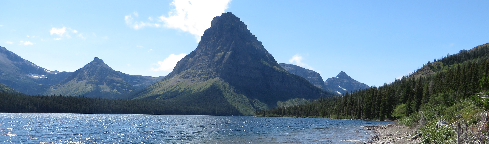

Peter Ferguson
About
Hi, I am a 5th year graduate student at Texas A&M currently working for Dr. Jennifer Marshall and Dr. Louis Strigari. Currently my research involves using photometric and spectroscopic surveys such as the DECam Local Volume Exploration (DELVE ), the Dark Energy Survey (DES) or the Southern Stellar Stream Spectroscopic Survey (S5) to explore the structure of the Milky Way Halo. Additionally, I am working as part of the Munnerlyn instrumentation lab developing TCal a mobile spectrophotometric calibration unit for imaging systems to enhance scientific return from large surveys such as the LSST at VRO. I also am extremely interested in spatial statistics, and data vizualization. For more information see the Research section below or my CV
In my free time I play ultimate frisbee, listen to music and figure out how to spend more time in places like Big Bend.
Research
A up to date-ish list of publications can be found at this ADS library --> (My Publications)
Science
The DECam Local Volume Exploration survey DELVE
The geometry of Sagittarius
One set of tools we use to study Galactic structure are RR Lyrae variable type stars because of the low (~5%) uncertainties on their distance from us. For this project we used RR Lyrae stars to trace the core of the disrupting dwarf galaxy Sagittarius (Sgr). I developed a simple model and hierarchical framework to characterize the geometry of Sgr using the RR Lyrae population. We derived distances to a sample of RR Lyrae in the central core of the Sgr dwarf galaxy from OGLE (Optical Gravitational Lensing Experiment) data, and used these 3D tracers along with RR Lyrae from Gaia DR2 (for which we only had percise 2D information) to measure the shape of the stellar distribution in the central ~2 kpc of Sgr. The best-fitting distribution is found to be highly triaxial with axis ratios 1:0.76:0.43, and can be used to constrain the Sgr progenitor or central dark matter distribution assuming dynamic equilibrium. Interestingly, the major axis is aligned nearly perpendicular to the Galactic Center. This result may be compared to cosmological simulations which generally predict that the major axis of the dark matter distribution of subhalos is aligned with the Galactic Center.
To the left I am showing an animation of the best fit ellipsoid, with the 3D OGLE RR Lyrae shown in black and the 2D Gaia RR Lyrae shown in red.

Stellar Stream in the Dark energy Survey
I worked on associating the new streams found in the Dark Energy Survey with previously known streams, and investigated the distribution of stream orbits looking for progenitors/ evidence of the vast polar structure(VPOS). The image to the left steps through different distance modulus(distances from us), the lines that come and go are streams seen in the Dark Energy Survey(Image credit:Alex Dirlica-Wagner).
Instrumentation
TCal: a spectrophotometric calibration instrument for imaging systems
As part of the Munnelyn Instrumentation Lab, I am developing calibration instrument TCal, similar to DeCal. This instrument will be used to characterize that will be used to characterize the throughput as a function of wavelength of imaging systems at observatories around the world. This will improve the science return from large scale surveys such as the LSST at the Vera Rubin Observatory, by placing survey follow-up resorces on a common photometric baseline, thus reducing the systematic error due to combining observations from multiple telescopes. To characterize as system we use a 2nm wide monochromater based tunable light source to illuminate the target system to be calibrated and our monitor CCD. The monitor CCD is calibrated in the lab using a NIST photodiode. So, the ratio between the signal in the target and monitor is a measurement of throughput of the target system at a given wavelength. By repeating this measurement at different wavelengths ranging from 300-1000 nm we are able to fully characterize the throughput of an instrument + telescope system as a funciton of wavelength.
{kind=link}
K2F2
I comissioned two new medium band infrared filters, K-blue and K-red, installed on FLAMINGOS-2(F2) at Gemini South an 8 meter telescope on Cerro Panchon in Chile. Additionally, I investigated how thermal emission from the telescope affects the observed sky brighness in the K-band. The plot on the left shows how the emission between 2200 and 2400 Anstroms(the blue line) is much brighter than the predicted sky(the black line). If we include in our model a component that is blackbody emission at the ambient temperature of the telescope the model (red line) is a much better fit to the data.
Contact Me
I can be reached at petersferguson "at" tamu.edu
Useful Links!
Astronomy
Public Observing
- Clear Dark Sky: Weather prediction for observing
- Tonight's Sky: Planner for observing College Station is 30.6 N 96.3 W